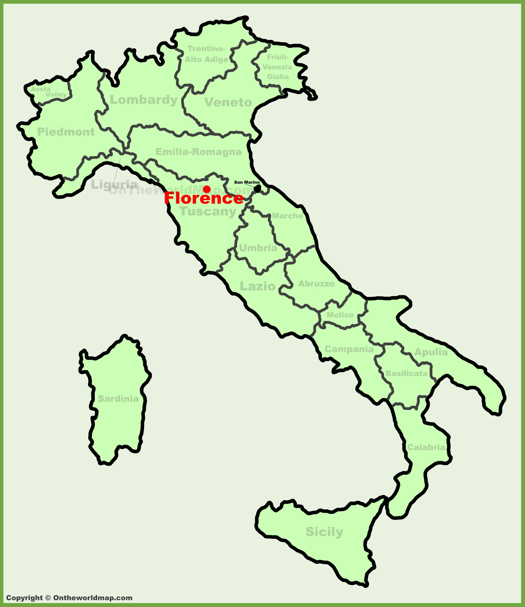
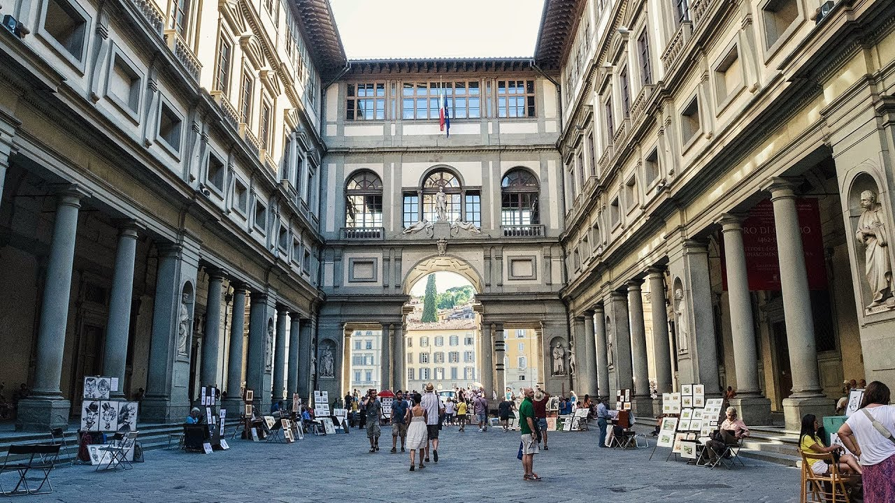
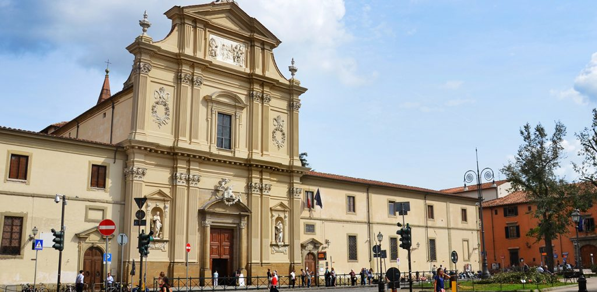

Florence is the capital of the Tuscany region in Italy, and is home to many masterpieces of the Renaissance art and architecture.
Top tourist attractions in Florence:
Duomo di Firenze is a cathedral in Florence that stands tall over the city with its magnificient Renaissance dome. Its unique architecture and design fascinate people from all over the world and as a result, it is the most visited and popular tourist attraction in Florence.
Check this link to see location of Duomo di Firenze in Florence.

The Ponte Vecchio is a medieval stone arch bridge over the Arno River in Florence. It is the oldest bridge in the city; the bridge had to be rebuilt in 1345 after a flood in the city. The bridge has many shops built close to it, making it a good attraction for many tourists.
Check this link to see location of Ponte Vecchio in Florence.
There are multiple other art galleries and museums in the city of Florence, the famous and most popular ones among tourists being the Uffizi Gallery and San Marco Museum.
 
Visit this page to know about hotel accomodations in the city of Florence.
Visit this page to know about the best restaurants in Florence.